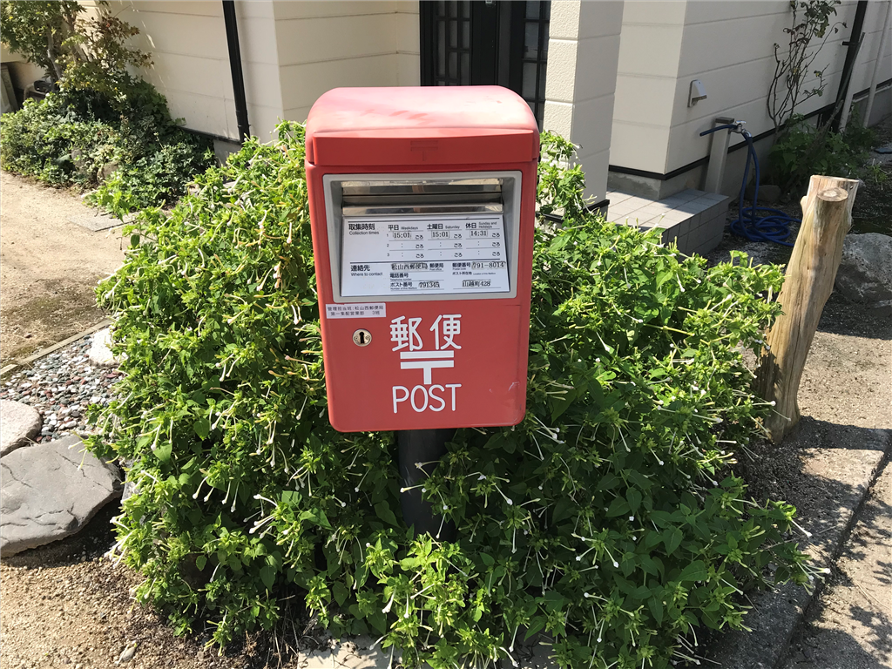
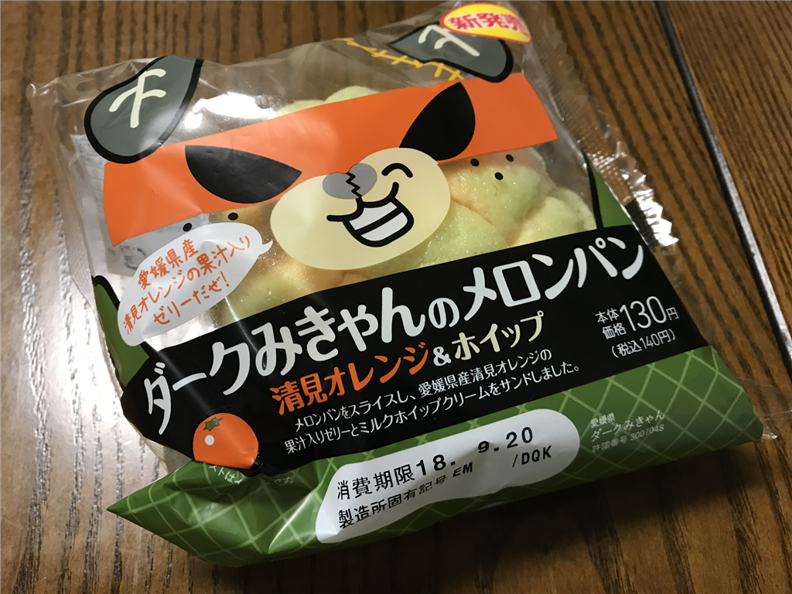
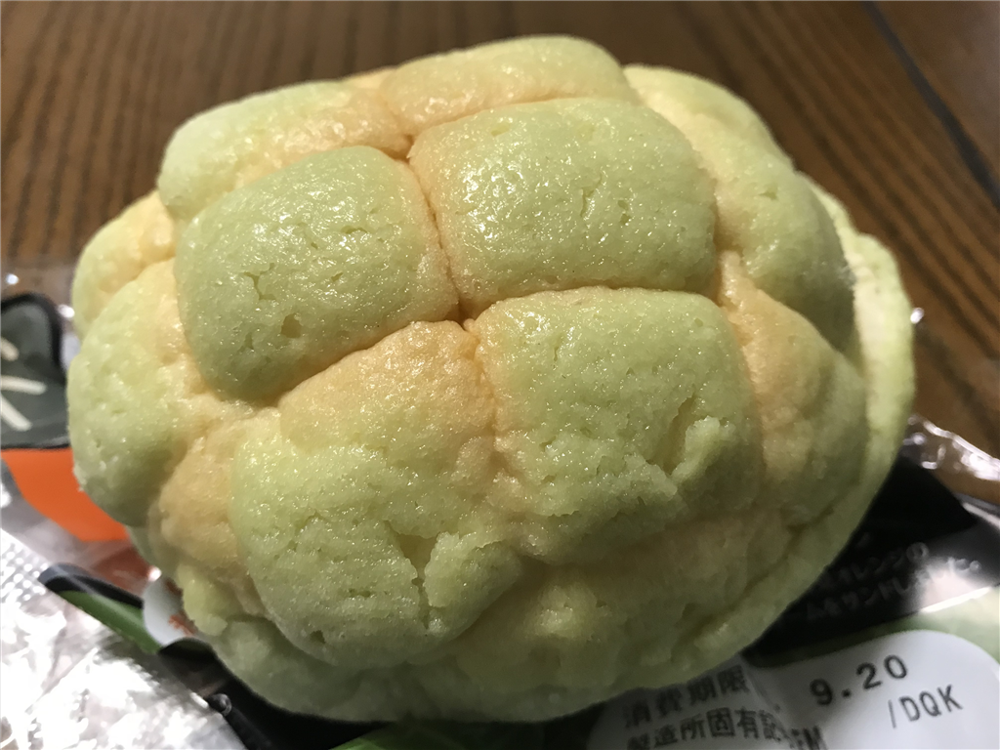
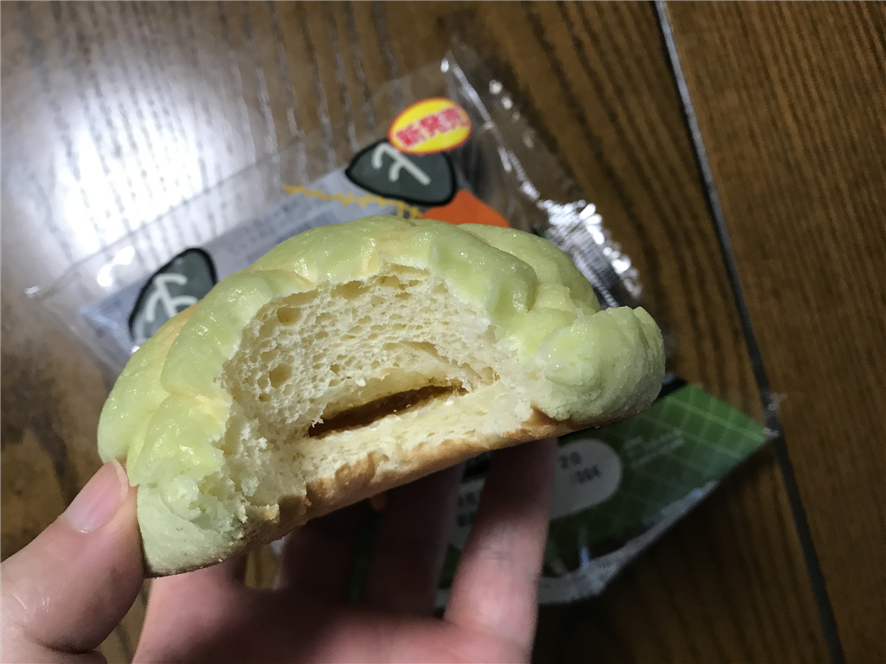

9月19日～20日：ダークみきゃんのメロンパン
公開日：

19日は朝の3時に起きて、お仕事。日本ネットクリエイター協会から口座振替依頼書がきていたので、仕事がひと段落ついた11時ごろにポストへ投函しに行く。ちょうどお財布も持っていたので、ついでに散髪屋にも寄る。さすがに平日（水曜日）なだけあって、客は一人だけで、すんなり髪を切ってもらえた。少しだけ男前になる。
最近、あまりちゃんと寝られていなかったせいか、昼過ぎ、とうとう睡魔が限界に達する。親父には夕ご飯になったら起こすように伝え、お布団でちょっと仮眠。ご飯を食べた後も眠くて眠くて、再び布団に潜り込んだのだけど、おかんから LINE がきたので、しばし談笑する。結局1時間ぐらいしゃべったが、さすがに相手するのも厳しくなってきたので、暇を告げて LINE を切った。その直後、意識が切れて、気が付いたらその次の日の朝3時だった。
最近はこんな暮らしで、あまり人権がないなと感じる。今日（20日）も3時から仕事してしまったけれど、もうあまり仕事はしないでおこうと思った。少し頑張りすぎのような気がしてる。連休明けの労働時間は10時間いってたしな……6時間以上は命を縮める。

それはそうと、朝ごはんは「ダークみきゃんのメロンパン 清見オレンジ＆ホイップ」をたべた。「ダークみきゃん」というのは、愛媛県のゆるキャラ。もともとはミカンをモチーフにした「みきゃん」というのがいたのだけど、何となくいい子過ぎてあまり存在感がなかった（独断と偏見）。そこで「カビがはえてしまったミカン」をベースに開発された悪役がこいつ。最近はみきゃん（♀？）とイチャイチャしてる感じがあって、個人的に「リア獣死ね」と思ってる。
パッケージは耳と目、口を残して透明になっており、普通より少し緑がかったメロンパンがダークみきゃんの顔になるようにデザインされている。「カビがはえてしまったミカン」のキャラでメロンパンを作るという発想は、なかなかすごくないか。もしカビが生えた商品を棚に並べちゃうみたいな事故が発生したら笑えないな。

とりあえず一口食べた感じ、この緑っぽいのはカビではないようだ。安心して食べられると思う。

パンのなかには甘酸っぱいミカンのゼリー（マーマレードジャムみたいな感じだ）が入っていて、口当たりはさわやかだ。フツーにアリというか、「メロンパンってなんなんだっけ……」という問いを投げかける逸品になっている。まぁ、もともとメロンパンはメロン味ではないんだが……マジでメロンパンとはなんぞや。まぁ、機会があればもう一度食べてもいいなと思った。ごちそうさま。